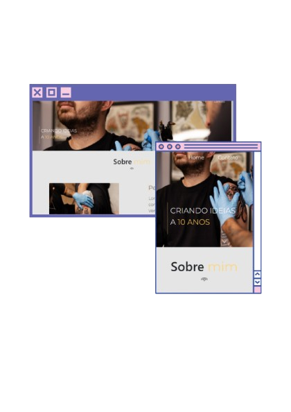
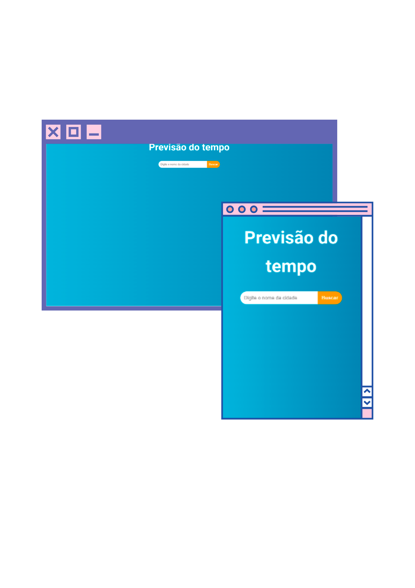
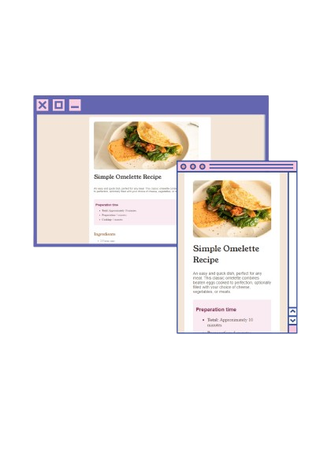

Learn more about what I do
I present my approach to transforming ideas into practical and functional solutions. Each project is meticulously developed to ensure efficiency, always aligned with the real needs and context of the user.
I develop interfaces that combine accessibility, usability, and aesthetics. My focus is on creating experiences that provide a smooth and enjoyable navigation, respecting best design practices and the needs of users.
My code is written with clarity and optimization in mind. I strive to implement solutions that are not only efficient but also easy to understand and maintain, always aiming for concrete results and high performance.
Responsive website created for a tattoo studio, focusing on user experience and aesthetics. It was developed using HTML and CSS, employing techniques to highlight the tattoo artist's work while showcasing artistic styles, reflecting the unique identity of the studio and the professional.
Click here
A website developed in React to provide weather forecasts for the current day and the next five days using an API. This project utilizes modern web technologies to deliver accurate and real-time weather data, ensuring an engaging user experience.
Click here
Design simples e organizado para uma página de receitas, com ingredientes e instruções apresentados de forma clara e segmentada, facilitando a leitura. Inclui imagem do prato finalizado e sugestões de personalização. O layout responsivo proporciona uma ótima experiência em qualquer dispositivo.
Click here